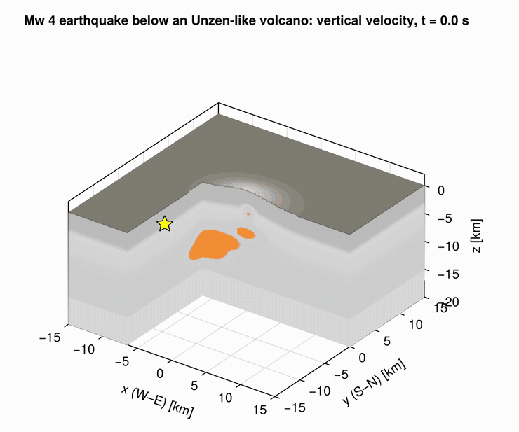
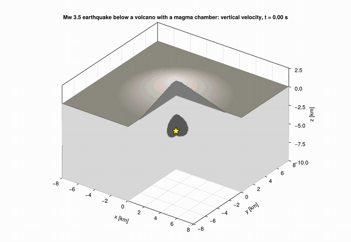
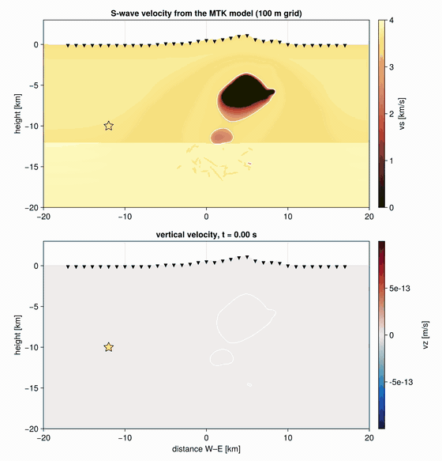
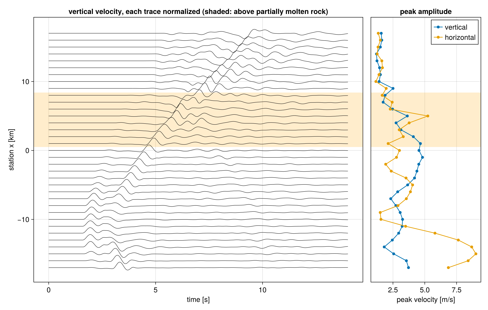
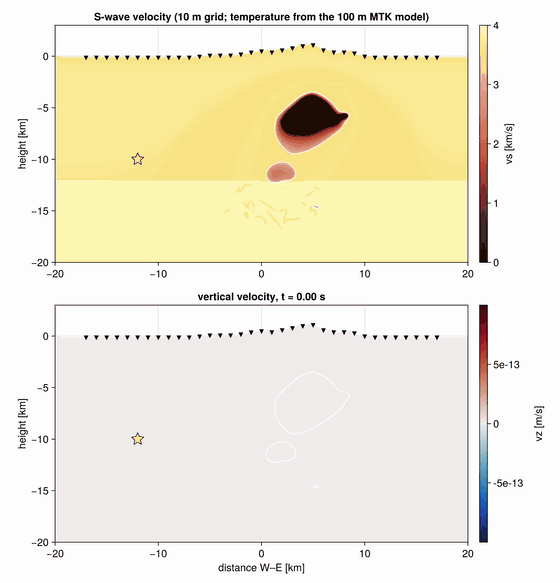
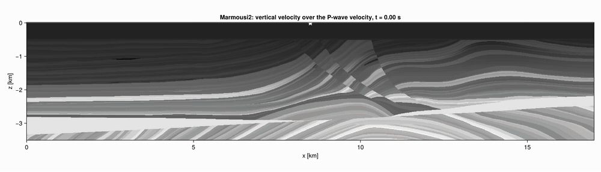
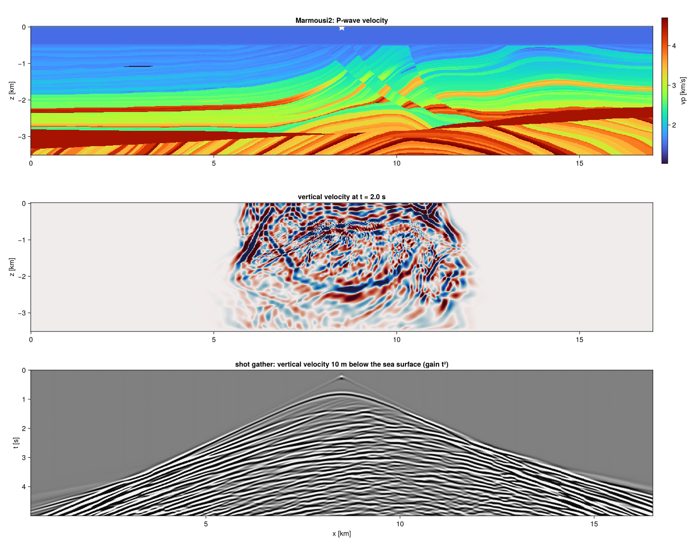
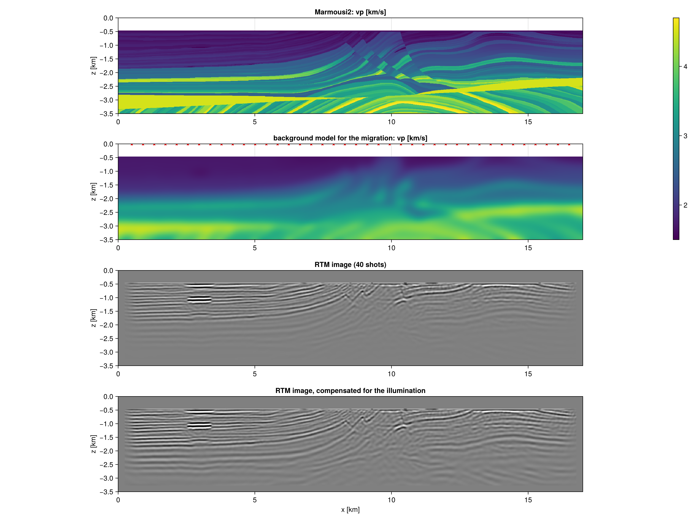
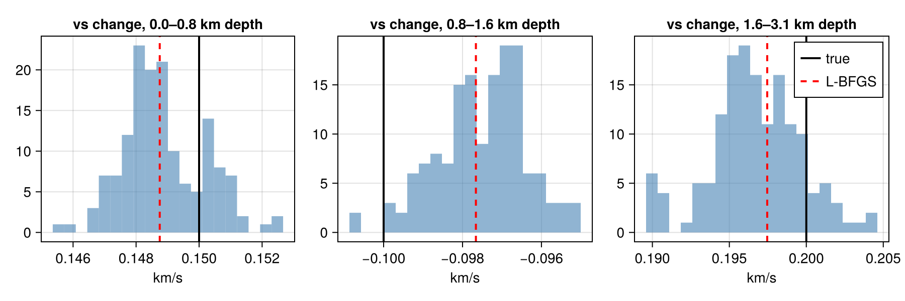

Examples
The examples are in the examples folder of the repository (see Installation for their environments). Most take cuda, amdgpu or metal as last argument to run on a GPU.
3D: waves through the magmatic system below an Unzen-like volcano
MagmaThermoKinematics/Unzen_3D.jl: a volcano on a peninsula, with a temperature field from a linear geotherm and superposed Gaussian anomalies (a deep mush reservoir, a body rising from it, a reservoir below the summit). MAGEMin phase diagrams give density, velocities and melt fraction; partially molten rock has a low Q. The movie of a Mw 4 earthquake is made while the simulation runs.

3D: a volcano with a magma chamber
3D_volcano.jl builds a volcano with GMG (add_volcano!), a magma chamber and stations given in longitude and latitude; 3D_mpi.jl runs it on 4 MPI processes, and 3D_volcano_movie.jl makes a movie of it:

2D: Unzen from MagmaThermoKinematics.jl and MAGEMin
MagmaThermoKinematics/Unzen_2D.jl runs the 2D Unzen model of MagmaThermoKinematics.jl (about 6 minutes at 100 m resolution), computes density, velocities and melt fraction with MAGEMin, and simulates an earthquake recorded by seismometers just below the surface:

Top: S-wave velocity from MAGEMin for the temperature field of MTK (black: molten, white lines: more than 10 % melt). Bottom: vertical velocity of a Mw 4 earthquake (star), recorded by seismometers just below the surface (triangles).

Vertical velocity at the seismometers (left) and peak velocities (right). Stations above the partially molten region (shaded) record weaker S waves and a longer coda.
The movie of the README is the same setup on a 10 m grid (10 million cells, 23 400 time steps; 2.5 minutes on an Apple M-series GPU): Unzen_2D_10m_model.jl interpolates the temperature of the 100 m MTK run onto the fine grid and computes the velocities with MAGEMin, and Unzen_2D_10m_waves.jl simulates a Mw 3 earthquake with a Brune (ω⁻²) source time function (corner frequency 7 Hz for a stress drop of 3 MPa), which the 10 m grid resolves up to ~20 Hz:

Marmousi2
The elastic Marmousi2 model (Martin et al., 2006; 17 km × 3.5 km, 451 m of water) is the classic benchmark of seismic wave propagation codes. Marmousi2.jl downloads it on first use, simulates a marine shot (explosion 10 m below the sea surface, 5 Hz Ricker wavelet) and makes a movie of the waves over the P-wave velocity while the simulation runs (10 m grid, 5 s, 12 s on a laptop):


P-wave velocity, a snapshot of the vertical velocity, and the shot gather recorded 10 m below the sea surface. The same model is the benchmark in Performance, and the comparison with OpenSWPC and SeismicWaves.jl is in Validation.
Reverse-time migration of Marmousi2
Marmousi2_RTM.jl images Marmousi2 by reverse-time migration (RTM): 40 marine shots (explosions 10 m below the sea surface, 5 Hz Ricker wavelet), each recorded by the receivers within 3 km, are migrated in a smooth background model (the rock smoothed over 150 m; the water layer and the sea floor stay sharp). The image is the gradient of the least-squares misfit with respect to vp in the background model, misfit_gradient, which correlates the source wavefield with the back-propagated reflections:
- only the part of each trace after the direct wave through the water enters the misfit (
L2Misfit(; window)per receiver; earlier arrivals are waves refracted in the rock, whose travel times the smooth model does not reproduce); illumination = truealso returns the energy of the source wavefield, Σₜ |v|², per cell; dividing by it compensates the weaker illumination of the deep parts;- a Laplacian filter removes the low-wavenumber artefacts of RTM.

The flat layers on the left, the dipping, faulted layers in the centre and the anticline on the right are imaged; with the illumination compensation down to about 3 km. 8 minutes on the laptop GPU (Metal; 10 m grid, 3.5 s): 3 minutes to model the 40 shots in the true model, 5 minutes for the migration (julia --project=examples examples/Marmousi2_RTM.jl metal).
Waveform inversion and Hamiltonian Monte Carlo
In examples/Inversion (own environment), noisy seismograms of one earthquake at 11 stations are inverted for the shear velocity in three depth bands:
inversion_turing.jl: L-BFGS with Optim.jl, then Hamiltonian Monte Carlo (NUTS) with Turing.jl;inversion_hmc.jl: NUTS with AdvancedHMC.jl directly, without Turing and without AD.

Posterior distributions (NUTS, Turing) of the shear-velocity changes, with the true values (black) and the L-BFGS result (red).
Others
2D_PSV_hill.jl: layered crust under a hill, with a record section (Getting started).2D_curvilinear.jl: a hill, a Moho-like interface and a magma chamber on a curvilinear grid (Topography on a curvilinear grid).benchmark.jl,benchmark_marmousi2.jl: the timings in Performance.topography_benchmark.jl,firn_rayleigh_benchmark.jl: free surface on tilted planes and a hill, and multi-mode Rayleigh waves in firn (Validation).check_cuda.jl,check_cuda_mpi.jl: checks of NVIDIA GPUs and of MPI on GPUs.